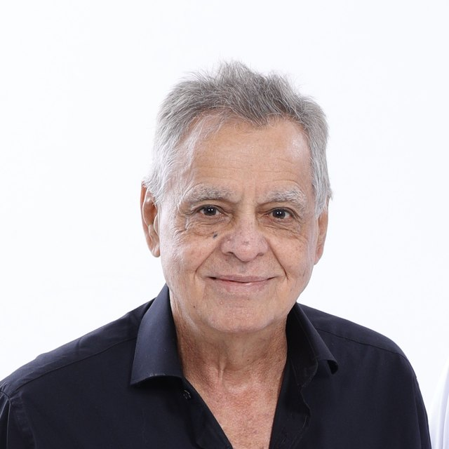
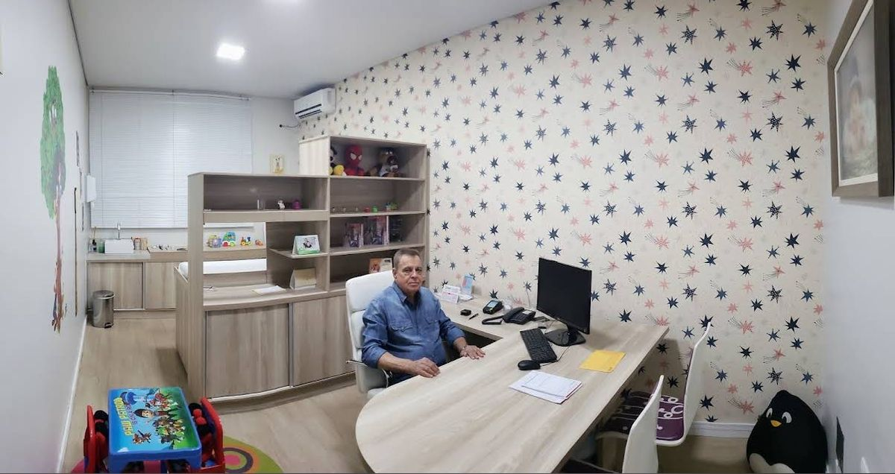
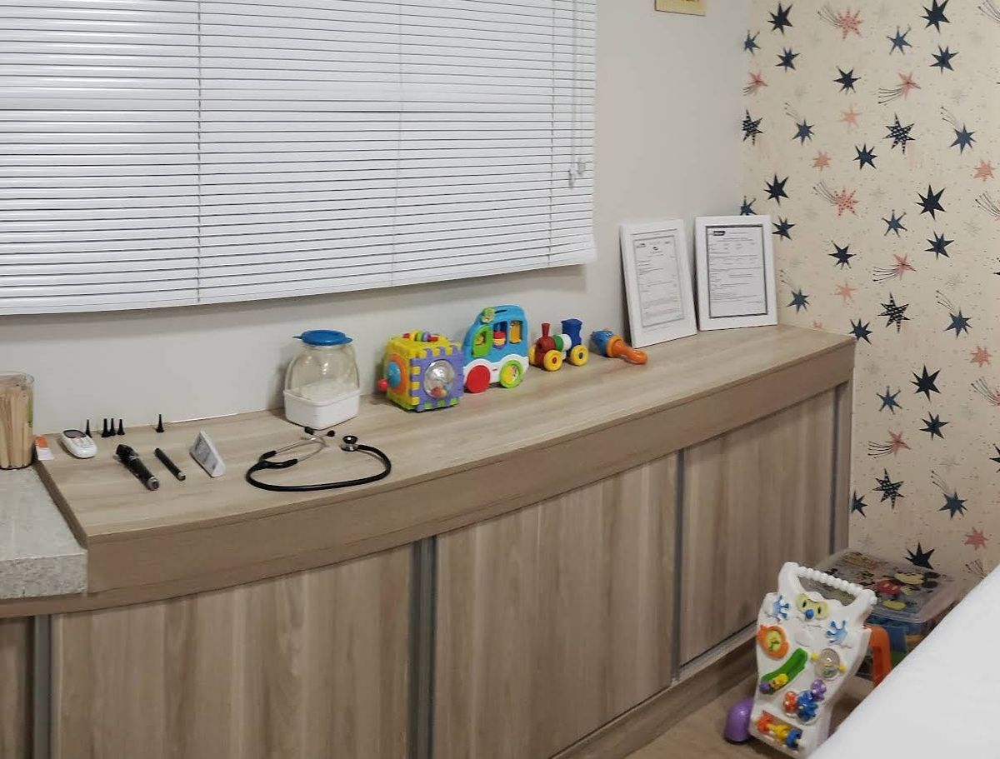
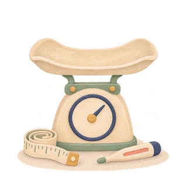
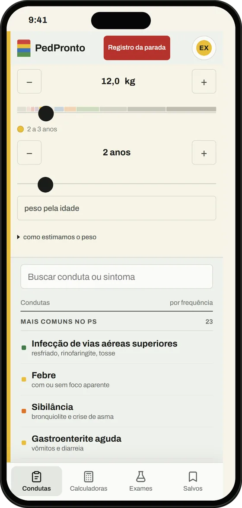

Diretor técnico médico
Dr. Ademir de Rezende
Médico pediatra. CRM-MG 11993. RQE 26134 (Pediatria).
Graduação em Medicina e residência em Pediatria pela Universidade Federal de Uberlândia.
Clínica médica em Uberlândia, MG
Consultas com hora marcada para crianças e adolescentes de 0 a 14 anos no Instituto de Pediatria do Hospital Mater Dei Santa Genoveva. A clínica também presta plantões médicos de urgência e emergência em hospitais.

Dr. Ademir de RezendeResponsável técnico · Pediatra desde 1978 · CRM-MG 11993 · RQE 26134


A clínica
A Rezende Serviços Médicos Ltda é uma empresa médica de Uberlândia com duas frentes: o consultório de pediatria, na sala 04 do Instituto de Pediatria do Hospital Mater Dei Santa Genoveva, no bairro Martins, e os plantões de urgência e emergência em hospitais.
A empresa foi aberta em 2018 e é inscrita no Conselho Regional de Medicina de Minas Gerais e no Cadastro Nacional de Estabelecimentos de Saúde. O responsável técnico é o Dr. Ademir de Rezende, pediatra em Uberlândia desde 1978.
Consultório
Consultas com hora marcada, particulares e por convênio, para crianças e adolescentes de 0 a 14 anos.
Avaliação nos primeiros dias de vida.
Acompanhamento do crescimento e do desenvolvimento.

Peso, altura, perímetro cefálico, temperatura, frequência cardíaca e respiratória e oximetria.
Orientação para cada idade e conferência do calendário vacinal.
Anamnese, exame físico, otoscopia e oroscopia.
Receitas, atestados e pedidos de exames complementares.
Atendimento clínico ambulatorial. O consultório não realiza procedimentos invasivos, coleta de exames nem vacinação. Em caso de urgência, procure um serviço de pronto atendimento.
Urgência e emergência
Além do consultório, a Rezende Serviços Médicos presta serviços médicos de plantão em urgência e emergência, em prontos-socorros e unidades hospitalares.
Os plantões acontecem nos hospitais e serviços contratantes. O consultório do Instituto de Pediatria atende só com hora marcada.
Parceria
PedPronto
A Rezende Serviços Médicos é parceira da PedPronto Tecnologia em Saúde Ltda no desenvolvimento do aplicativo PedPronto, uma ferramenta de referência e cálculo para médicos que atendem urgência pediátrica.
O PedPronto é uma ferramenta de referência e cálculo para médicos. Não substitui o julgamento clínico do médico assistente.

Equipe
Diretor técnico médico
Médico pediatra. CRM-MG 11993. RQE 26134 (Pediatria).
Graduação em Medicina e residência em Pediatria pela Universidade Federal de Uberlândia.
Responsável legal e sócio-administrador
Médico. CRM-MG 94090.
Como agendar
Pelo WhatsApp ou telefone (34) 99880-3829. Informe o nome e a idade da criança e se a consulta é particular ou por convênio.
A secretária responde com os horários livres e confirma a data.
Traga a caderneta de saúde da criança, a carteirinha do convênio, um documento com foto do responsável e exames anteriores, se houver.
Não encontrou o seu plano? Mande uma mensagem e a secretária confirma.
Onde fica o consultório
Horário e contato
Segunda a sexta9h às 17h
Registros públicos
Os registros oficiais que identificam a Rezende Serviços Médicos Ltda.
Rezende Serviços Médicos Ltda is a medical company in Uberlândia, Minas Gerais, Brazil. It provides outpatient pediatric consultations for children and adolescents at the Pediatrics Institute (Instituto de Pediatria) of the Mater Dei Santa Genoveva Hospital, and physician shifts in urgent and emergency care at private hospitals and, under service contracts, at public health services.